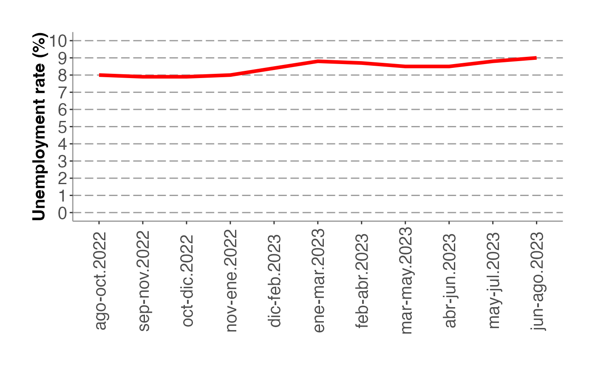

Testing
Tutorial.RmdPackage Tutorial
The inedata package allows to download datasets produced
by INE Chile. The package communicates with an API REST, which makes it
possible to retrieve many household survey datasets using R code. All
the available data provided by this API corresponds to files published
on INE’s web site.
At the moment the API is restricted to the institutional network. Because of that the package works only in this environment. We hope to make the API available to the general public as soon as possible.
First steps
At the moment the package can be installed from github or gitlab using devtools.
# From github
devtools::install_github("inesscc/dataine")
# From gitlab
devtools::install_gitlab("inesscc/dataine")
library(inedata)Getting catalog
get_catalog() returns a dataframe containing all the
datasets available in the repository and its versions when the
dataset parameter is not specified. The following datasets
are currently available:
- EPF
- ENUSC
- ESI
- ENE
It also adds summary data in the form of number of columns and rows per dataset (in the n_col and n_row columns, respectively). The survey column contains the survey where the dataset comes from. The version column indicates the year or quarter when the dataset was collected.
get_catalog()
#> # A tibble: 203 × 5
#> survey version n_row n_col file_size_MB
#> <chr> <chr> <int> <int> <dbl>
#> 1 ene 2023-07-jja 102577 173 137.
#> 2 ene 2023-06-mjj 101592 173 135.
#> 3 ene 2023-05-amj 98968 172 129.
#> 4 ene 2023-04-mam 98355 172 132.
#> 5 ene 2023-03-fma 95131 172 126.
#> 6 ene 2023-02-efm 96167 172 129.
#> 7 ene 2023-01-def 93461 173 124.
#> 8 ene 2022-12-nde 94042 173 125.
#> 9 ene 2022-11-ond 93103 173 123.
#> 10 ene 2022-10-son 92761 174 18.5
#> # ℹ 193 more rowsThe dataset parameter retrieves information for a
specific survey. In this example we are using ene, which
returns all the available versions for that survey. We will store the
file version for the june-august-september quarter of 2011 (2011-08-jas)
in a variable called file.
get_catalog(dataset = "ene")
#> # A tibble: 162 × 5
#> survey version n_row n_col file_size_MB
#> <chr> <chr> <int> <int> <dbl>
#> 1 ene 2023-07-jja 102577 173 137.
#> 2 ene 2023-06-mjj 101592 173 135.
#> 3 ene 2023-05-amj 98968 172 129.
#> 4 ene 2023-04-mam 98355 172 132.
#> 5 ene 2023-03-fma 95131 172 126.
#> 6 ene 2023-02-efm 96167 172 129.
#> 7 ene 2023-01-def 93461 173 124.
#> 8 ene 2022-12-nde 94042 173 125.
#> 9 ene 2022-11-ond 93103 173 123.
#> 10 ene 2022-10-son 92761 174 18.5
#> # ℹ 152 more rows
file <- get_catalog(dataset = "ene") %>%
filter(version=="2011-08-jas") %>%
pull(version)Getting columns
The get_columns() function returns the columns for a
specific file. It requires two mandatory parameters, namely
dataset and version to fetch the specific
column names. We already have the name of one of the available versions
of the ene survey.
get_columns(dataset = "ene", version = file)
#> [1] "ano_trimestre" "mes_central" "ano_encuesta"
#> [4] "mes_encuesta" "region" "provincia"
#> [7] "r_p_c" "estrato" "region_15"
#> [10] "estrato_15" "r_p_c_15" "tipo"
#> [13] "id_directorio" "id_identificacion" "hogar"
#> [16] "idrph" "nro_linea" "edad"
#> [19] "tramo_edad" "sexo" "parentesco"
#> [22] "curso" "nivel" "termino_nivel"
#> [25] "cine" "est_conyugal" "proveedor"
#> [28] "nacionalidad" "a1" "a2"
#> [31] "a3" "a4" "a5"
#> [34] "a6" "a6_otro" "a7"
#> [37] "a8" "b1_ciuo88" "b2"
#> [40] "b3" "b4" "b5"
#> [43] "b6" "b7_1" "b7_2"
#> [46] "b7_3" "b7_4" "b7_5"
#> [49] "b7_6" "b7_7" "b8"
#> [52] "b9" "b10" "b11"
#> [55] "b12" "b13_ciiu_rev3" "b14_ciiu_rev3"
#> [58] "b15_1" "b15_2" "b16"
#> [61] "b16_otro" "b17_mes" "b17_ano"
#> [64] "b18_codigo" "b18_region" "b18_varias"
#> [67] "b19" "c1" "c2_1_1"
#> [70] "c2_1_2" "c2_1_3" "c2_2_1"
#> [73] "c2_2_2" "c2_2_3" "c3_1"
#> [76] "c3_2" "c3_3" "c4"
#> [79] "c5" "c6" "c7"
#> [82] "c8" "c9" "c10"
#> [85] "c11" "c12" "c13"
#> [88] "habituales" "efectivas" "e1"
#> [91] "e2" "e3_1" "e3_2"
#> [94] "e3_3" "e3_4" "e3_5"
#> [97] "e3_6" "e3_7" "e3_8"
#> [100] "e3_9" "e3_10" "e3_11"
#> [103] "e3_12" "e3_total" "e4"
#> [106] "e5" "e5_dia" "e5_sem"
#> [109] "e5_mes" "e5_ano" "e6_mes"
#> [112] "e6_ano" "e7" "e8"
#> [115] "e9" "e10" "e11"
#> [118] "e12" "e13" "e14_mes"
#> [121] "e14_ano" "e15_meses" "e15_anos"
#> [124] "e16_ciuo88" "e17" "e18_ciiu_rev3"
#> [127] "e19" "e19_otro" "activ"
#> [130] "obe" "tpi" "id"
#> [133] "ftp" "cae_general" "cae_especifico"
#> [136] "categoria_ocupacion" "fact" "fact_cal"Downloading data
The get_data() function allows us to bring a dataset
from a specific survey. The function has four parameters:
dataset, version, col_list and
save_where. For instance, we can get the ene data
for a specific quarter. If the version parameter is not
specified then it will return the newest version of the survey.
# Get dataset of a specific version
ene <- get_data(dataset = "ene", version = file )
# Get newest version
ene2 <- get_data(dataset = "ene")
ene %>% head(3)
#> index ano_trimestre mes_central ano_encuesta mes_encuesta region provincia
#> 1 0 2011 8 2011 9 8 82
#> 2 1 2011 8 2011 9 8 82
#> 3 2 2011 8 2011 9 6 63
#> r_p_c estrato region_15 estrato_15 r_p_c_15 tipo id_directorio
#> 1 8207 8129 8 8129 8207 3 4161
#> 2 8207 8129 8 8129 8207 3 4161
#> 3 6303 6042 6 6042 6303 2 5148
#> id_identificacion hogar idrph nro_linea edad tramo_edad sexo parentesco curso
#> 1 4565 1 17204 1 66 11.0 1 1 3
#> 2 4588 1 17291 1 43 6.0 1 1 5
#> 3 16431 1 61955 1 40 6.0 1 1 4
#> nivel termino_nivel cine est_conyugal proveedor nacionalidad a1 a2 a3 a4 a5
#> 1 3 2 3 1 0 152 1.0 1.0
#> 2 3 2 3 2 0 152 1.0 1.0
#> 3 4 1 5 1 1 152 1.0 1.0
#> a6 a6_otro a7 a8 b1_ciuo88 b2 b3 b4 b5 b6 b7_1 b7_2 b7_3 b7_4 b7_5 b7_6
#> 1 6.0 1.0 2.0
#> 2 6.0 1.0 2.0
#> 3 9.0 2.0 2.0 1.0 1.0 1.0 1.0 1.0 3.0
#> b7_7 b8 b9 b10 b11 b12 b13_ciiu_rev3 b14_ciiu_rev3 b15_1 b15_2 b16 b16_otro
#> 1 1.0 1.0 1.0 4.0
#> 2 1.0 1.0 1.0 4.0
#> 3 2.0 1.0 2.0 2.0 1.0 6.0 4.0 7.0
#> b17_mes b17_ano b18_codigo b18_region b18_varias b19 c1 c2_1_1 c2_1_2 c2_1_3
#> 1 99.0 1965.0 8207.0 8.0 2.0 2.0 1.0 8.0 7.0 56.0
#> 2 99.0 1990.0 8207.0 8.0 2.0 2.0 2.0 3.0 7.0 21.0
#> 3 3.0 2008.0 6101.0 6.0 2.0 2.0 1.0 999.0 6.0 45.0
#> c2_2_1 c2_2_2 c2_2_3 c3_1 c3_2 c3_3 c4 c5 c6 c7 c8 c9 c10 c11 c12 c13
#> 1 2.0 2.0 1.0 1.0 1.0
#> 2 2.0 1.0 3.0 1.0 1.0 1.0 6.0
#> 3 999.0 6.0 45.0 2.0 2.0 2.0 2.0
#> habituales efectivas e1 e2 e3_1 e3_2 e3_3 e3_4 e3_5 e3_6 e3_7 e3_8 e3_9
#> 1 56.0 56.0 2.0
#> 2 21.0 18.0 2.0
#> 3 45.0 45.0 2.0
#> e3_10 e3_11 e3_12 e3_total e4 e5 e5_dia e5_sem e5_mes e5_ano e6_mes e6_ano e7
#> 1 0.0
#> 2 0.0
#> 3 0.0
#> e8 e9 e10 e11 e12 e13 e14_mes e14_ano e15_meses e15_anos e16_ciuo88 e17
#> 1
#> 2
#> 3
#> e18_ciiu_rev3 e19 e19_otro activ obe tpi id ftp cae_general cae_especifico
#> 1 1.0 0.0 0.0 1 1
#> 2 1.0 0.0 1.0 1 1
#> 3 1.0 0.0 0.0 1 1
#> categoria_ocupacion fact fact_cal
#> 1 2 105,77030411 86,8648910010612
#> 2 2 105,77030411 112,560637427099
#> 3 3 80,47339832 103,559180372675With col_list we can select some of the variables in the
dataset, if not specified it will select all columns. Meanwhile,
save_where allows us to define where the dataset will be
stored. There are four options:
-
renviron: store in the memory of R enviroment. If
the size overloads the ram memory it will show a warning and a prompt
recommending to save the data in the working directory and asking if the
user wants to proceed.
- disk: store in a directory called data/ in the working directory, but not in the R enviroment.
- both: store in both parts.
- no_message: under the users responsibility, it will not show the warning and the datasets will be stored in R enviroment.
ene_small <- get_data(dataset = "ene", version = file, col_list = c("ano_trimestre","mes_central","fact_cal","cae_especifico"), save_where = "renviron")
ene_small %>% head()
#> ano_trimestre cae_especifico fact_cal mes_central
#> 1 2011 1 86,8648910010612 8
#> 2 2011 1 112,560637427099 8
#> 3 2011 1 103,559180372675 8
#> 4 2011 1 87,3907172436076 8
#> 5 2011 1 135,46894912875 8
#> 6 2011 13 119,935658002151 8Important note: we highly recommend against downloading the entire dataset. Instead, consider selecting specific columns, as the full download could consume a substantial amount of time and storage space.
The get_many_data() function allows to download more
than one dataset at the same time. In this example we are getting the
versions between december-january-february (2022-01-def) and
february-march-april (2022-03-fma) 2022 quarters of the ene
survey.
The function has six parameters: dataset,
from, to, col_list,
save_where, memory_warning_limit. The
fromand to arguments are mandatory and are
used to filter by the selected periods or versions of a particular
survey. The memory_warning_limit argument allows you to set
the memory limit that triggers the warning when downloading to R
memory.
The output is a list of dataframes. In this case we can see the
df_list contains 3 elements.
df_list <- get_many_data(dataset = "ene", from = "2022-01-def", to = "2022-03-fma" )
length(df_list)
#> [1] 3We can convert the three dataframes into one table
ene_table <- df_list %>%
bind_rows()Important note: different versions of the same
dataset are not always compatible, so, the bind_rows()
method won’t always work. Be always careful when joining multiple
versions and check their structure before proceeding.
Practical example
Let’s suppose that we are interested in the evolution of the
unemployment rate over the last few quarters. In this case, we can use
the get_many_data() function, as shown in the following
example:
ene_serie <- get_many_data(dataset = "ene", from = "2022-09-aso", to = "2023-07-jja", col_list = c("ano_trimestre", "mes_central", "cae_especifico", "fact_cal"), memory_warning_limit = 10000)Next, we can calculate the unemployment rate and create a graph for it.
ene_serie %>%
map(., . %>% mutate(fact_cal = as.numeric(gsub(",", ".", fact_cal)),
work_force = ifelse(cae_especifico %in% 1:9, 1, 0),
unemployed = ifelse(cae_especifico %in% 8:9, 1, 0)) %>%
filter(work_force == 1) %>%
group_by(ano_trimestre, mes_central) %>%
summarise(work_force = round(sum(work_force*fact_cal), 0),
unemployed = round(sum(unemployed*fact_cal), 0)) %>%
mutate(unemployment_rate = round((unemployed/work_force)*100, 1))
) %>%
bind_rows() %>%
mutate(ano_trimestre=as.factor(ano_trimestre),
periodo = case_when(mes_central==1 ~ "dic-feb",
mes_central==2 ~ "ene-mar",
mes_central==3 ~ "feb-abr",
mes_central==4 ~ "mar-may",
mes_central==5 ~ "abr-jun",
mes_central==6 ~ "may-jul",
mes_central==7 ~ "jun-ago",
mes_central==8 ~ "jul-sep",
mes_central==9 ~ "ago-oct",
mes_central==10 ~ "sep-nov",
mes_central==11 ~ "oct-dic",
mes_central==12 ~ "nov-ene"),
periodo = factor(periodo, levels=c("dic-feb","ene-mar","feb-abr","mar-may","abr-jun","may-jul",
"jun-ago","jul-sep","ago-oct",
"sep-nov","oct-dic","nov-ene"))) %>%
ggplot() +
aes(x = interaction(periodo, ano_trimestre), y = round(unemployment_rate,1), group = 1, color = 1) +
geom_line(size = 1.5, color = "red") +
scale_y_continuous(limits = c(0, 10),
n.breaks = 10) +
labs(y = "Unemployment rate (%)") +
theme(axis.title.x = element_blank(),
axis.text.x = element_text(angle = 90,
vjust = 0.5,
size = 15),
axis.text.y = element_text(size = 15),
panel.grid = element_blank(),
panel.grid.major.y = element_line(color = "gray60",
size = 0.5,
linetype = "longdash"),
panel.background = element_rect(fill="#ffffff",
color="#ffffff"),
plot.margin = unit(c(1,1,1,1), "cm"),
axis.title.y = element_text(size = 15,
face = "bold",
margin = unit(c(0,0,0,0), "cm")),
axis.title.y.right = element_text(margin = unit(c(0,0,0,0), "cm"),
size = 15,
face = "bold",
angle = 90),
axis.line = element_line(colour = "grey60")) 
API Tutorial
The R package works with a service developed in Python, whose documentation can be found here.Below are the endpoints and a link to the documentation.
Important note: when interacting directly with the API, it is important to be aware that due to data format restrictions, any cells that were originally NA will be displayed as empty text.
Returns available datasets
A .json file is entered containing the survey, version and
optionally a list of columns. If a list of columns is not entered, the
API returns a table with all the columns of the survey. The final output
is also in a .json format.
The next example shows how to get the dataset of the enusc 2017
survey selecting the columns “P1_1_1” and “P3_1_1” in a .json
format.
{
"dataset": "enusc",
"version": "2017",
"col_list": [
"P1_1_1",
"P3_1_1"
]
}The endpoint is the following:
http://10.90.10.46:7000/dataReturns the columns of a file
The user has to enter the dataset and version, then the API will return a vector containing the columns of the selected dataset.
The endpoint is the following:
http://10.90.10.46:7000/colnamesReturns summary data
Delivers metadata of the available tables. Optionally, you can enter a survey to filter using the parameter dataset_filter, obtaining the metadata of the tables associated with that survey in .json format. Data includes dataset name, dataset version, number of rows, number of columns and file size in bytes.
The endpoint is the following:
http://10.90.10.46:7000/info